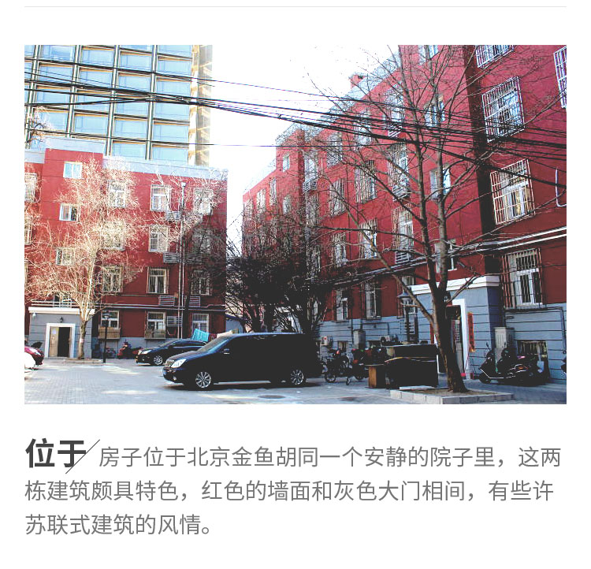
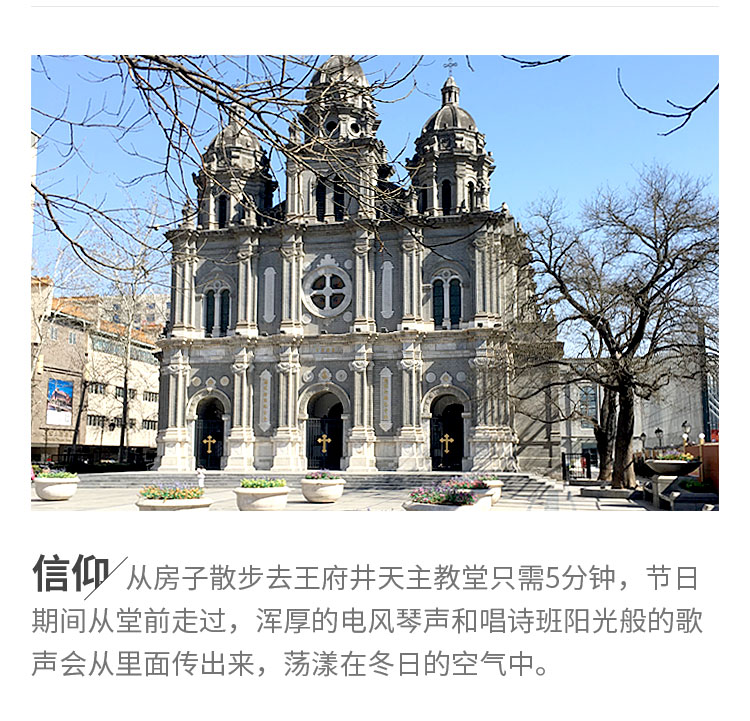
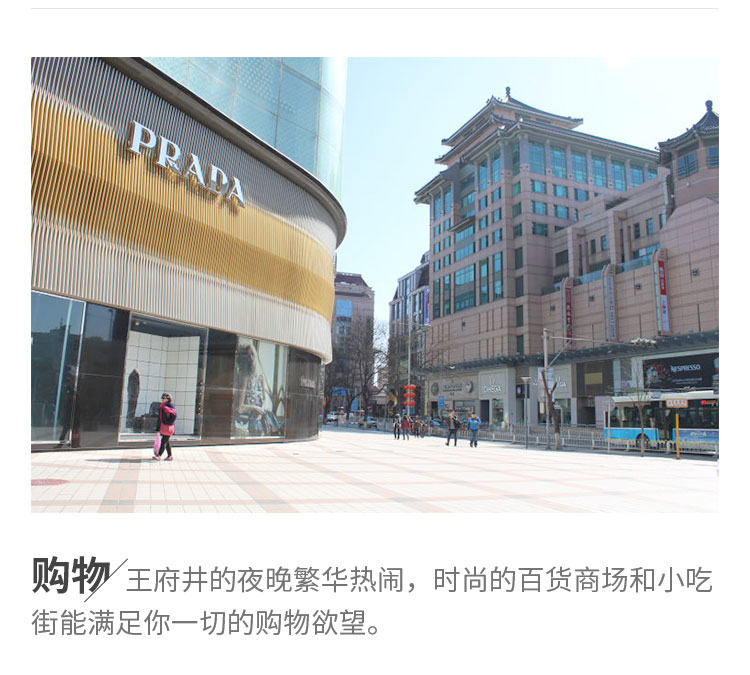
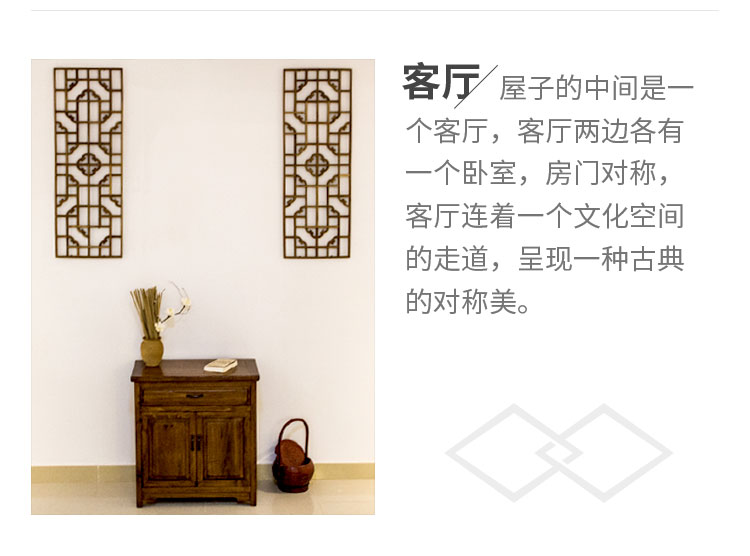
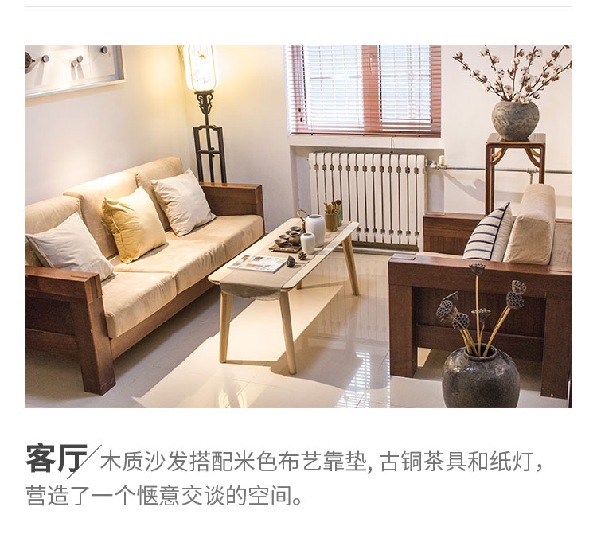
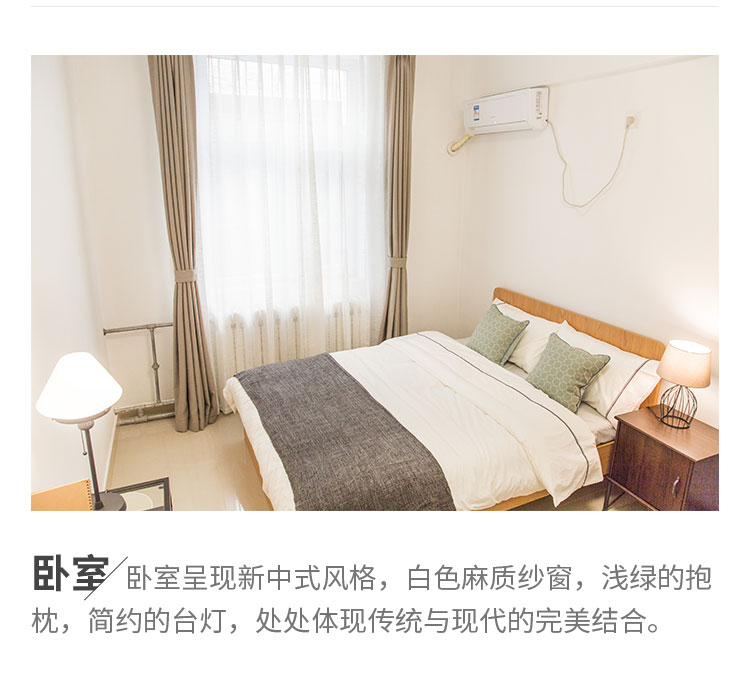
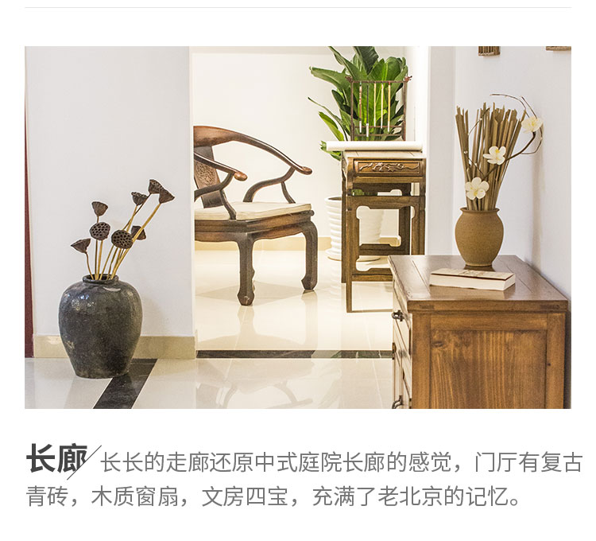

房主Sofia
温柔知性, 追求美和平衡,爱电影,爱旅行,爱音乐以及一切美的事物, 她对胡同和设计有一种迷恋。
-

北京金鱼胡同一个安静的院子里，这两栋建筑颇具特色，红色的墙面和灰色大门相间，有些许苏联式的建筑风情。
-
散步可到达东华门，天主大教堂，美术馆和世界顶级奢侈品店，这是一个感受老北京和当代北京文化的最佳居住地。
-

这个房子改造前是规规矩矩空白的空间，两间房紧挨，大小不一。
-

改造后，房间的旧格局被打破，形成两个房门对称，中间是客厅的格局，客厅连着一个文化空间的走道，呈现一种古典的对称美。

-

旧的木质沙发焕然一新，换上了米色布艺靠垫, 搭配茶具与古灯，营造了一个惬意交谈的空间。
-

卧室呈现新中式风格，白色麻质纱窗，浅绿的抱枕，简约的台灯，处处体现传统与现代的完美结合。
-

长长的走廊还原中式庭院长廊的感觉，复古青砖，木质窗扇，文房四宝，全都充满了老北京的记忆。
-


陶罐，棉花，莲花铜杯，每一个细节都静静地表达着古典美。